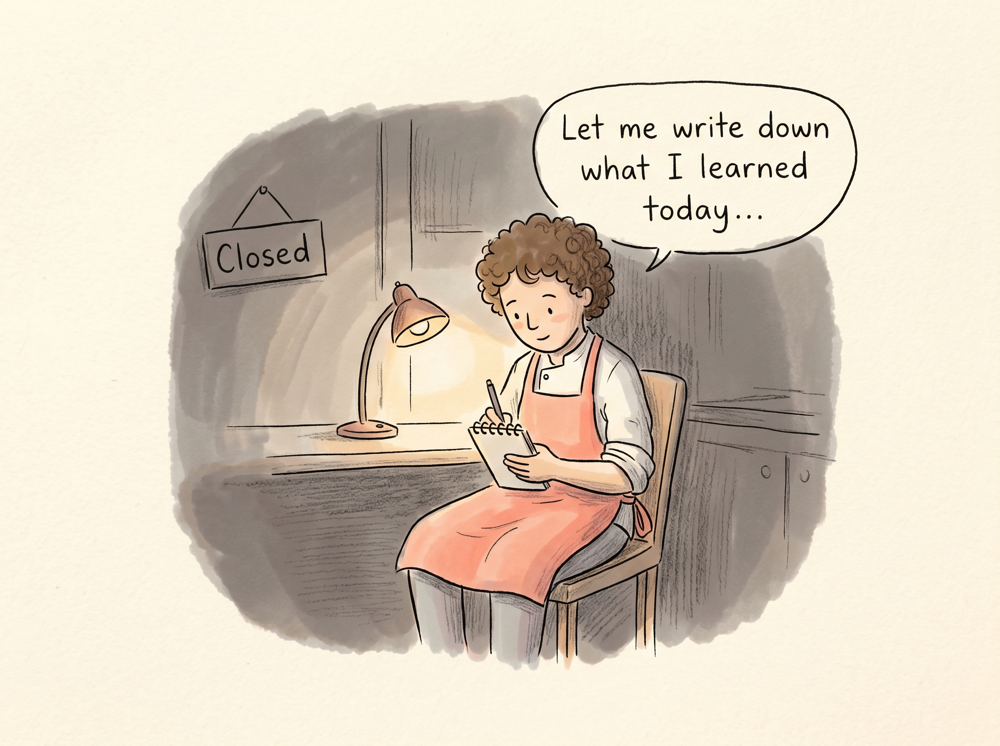
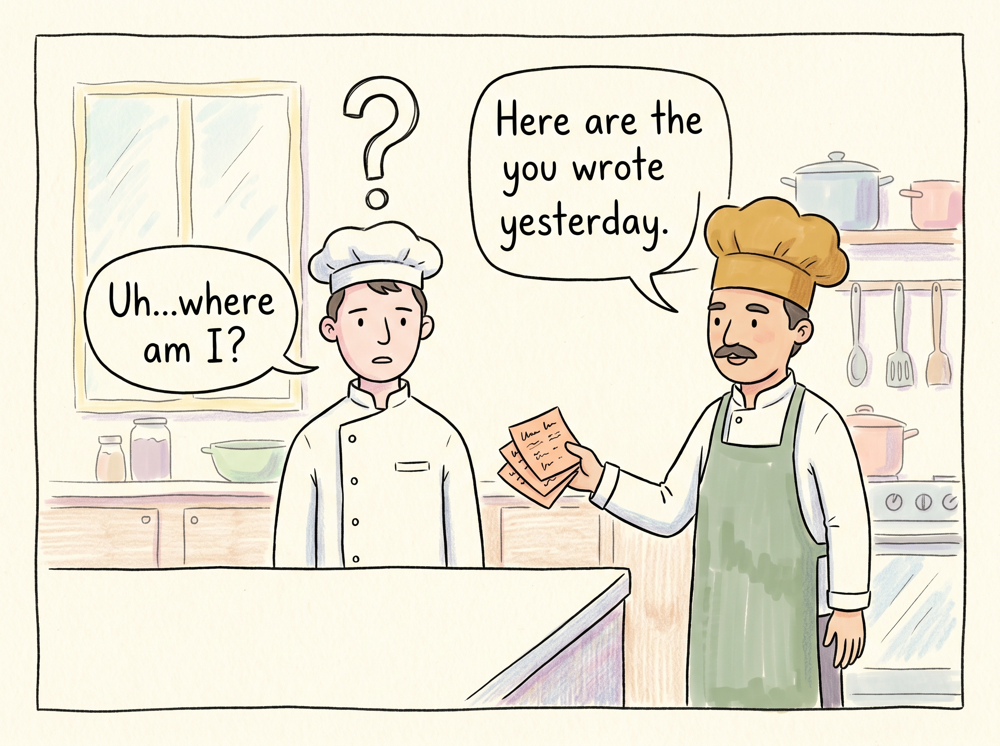
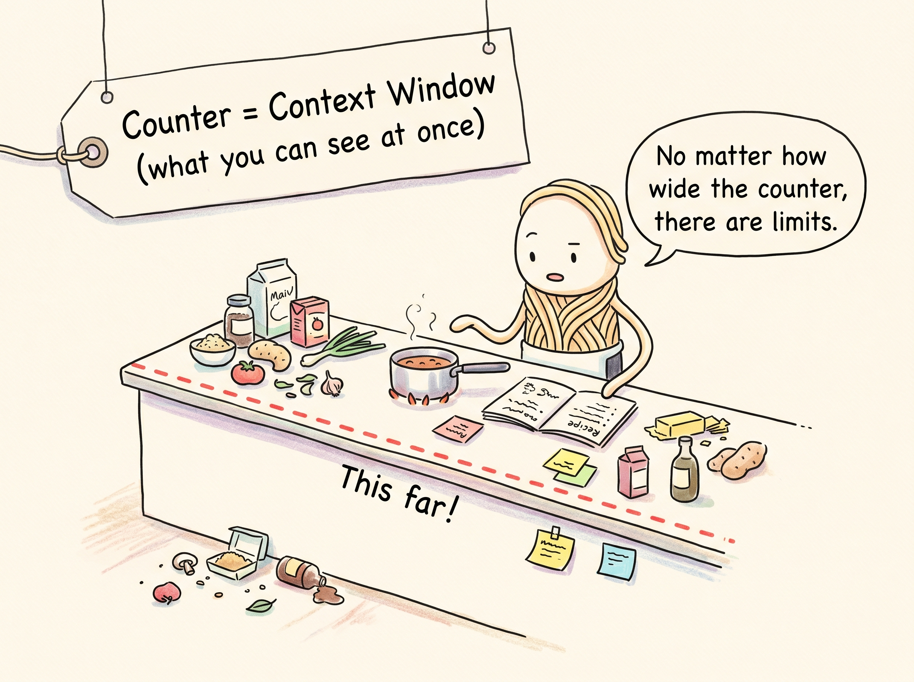
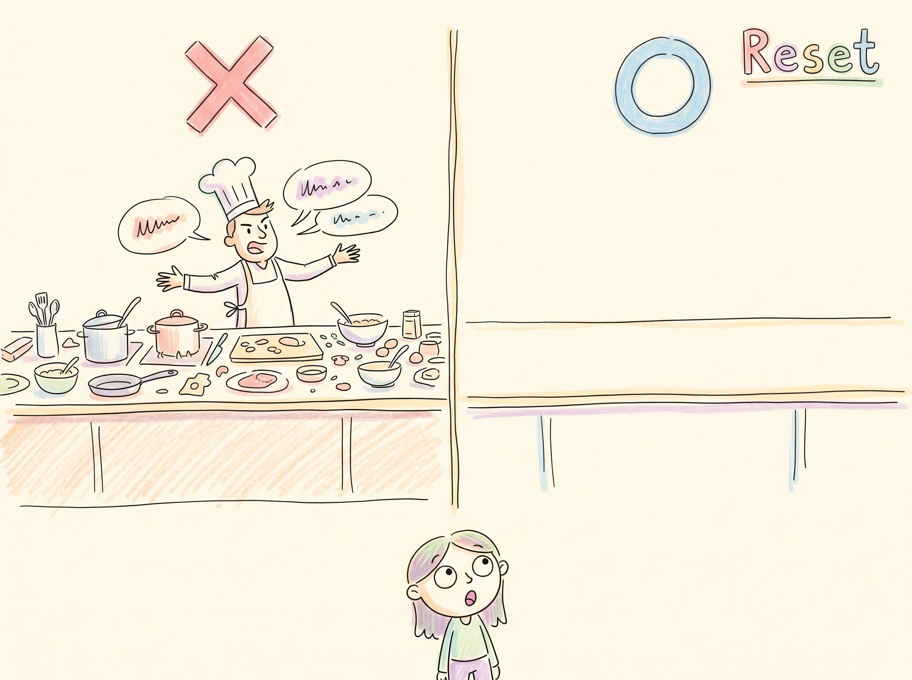
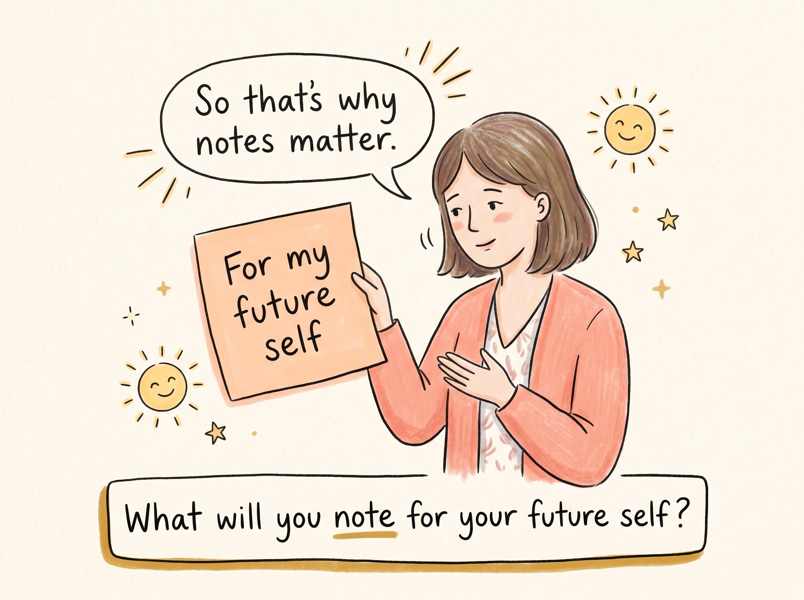

EP4-P1
영업 후 — 텅 빈 주방

소스 셰프:오늘 배운 거, 적어놔야지...
영업이 끝나면 셰프들은 오늘을 잊습니다.
[E3] AI는 세션이 끝나면 기억을 잃는다 — 기억 휘발.
EP4-P2
다음 날 아침 — 새 셰프?

소스 셰프:어...여기가 어디지?
헤드셰프:어제 네가 쓴 노트, 여기 있어.
다음 날의 셰프는 어제를 모릅니다.
[E3] 메모리 = 내일의 셰프에게 쓰는 조리 노트.
EP4-P3
조리대 공간 — 컨텍스트 윈도우

소스 셰프:조리대가 아무리 넓어도 한계가 있어.
컨텍스트 윈도우 = 셰프가 한 번에 볼 수 있는 조리대
[E2] 컨텍스트 윈도우는 한정된 작업 공간. 영업 끝나면 치워진다.
EP4-P4
잠깐, 이건 아니에요! — 오개념 교정

Ana:조리대가 넓어도 매일 치운다고요?
컨텍스트가 커져도 세션이 끝나면 리셋됩니다.
[오개념 교정] M6(한 번 배우면 기억) + M10(컨텍스트 무한) 교정.
EP4-P5
마무리 — 생각해보기

Ana:그래서 노트가 중요하구나.
[생각해보기] AI의 기억은 사람과 어떻게 다를까요? 힌트: 매일 첫 출근!
[자가 점검] AI 기억 휘발의 핵심 이해 확인.